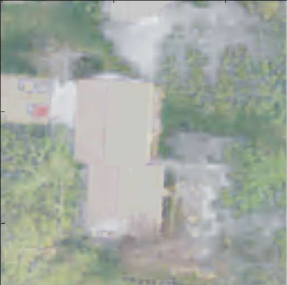
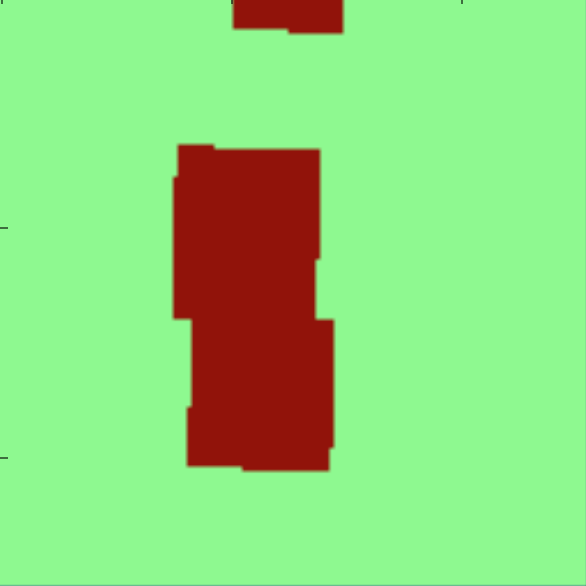

Abstract
This project uses machine learning for satellite imagery processing to identify building rooftops. The results of this model can be applied in many situations, and would be especially useful in identifying residential areas in under documented regions of the world. Rapid image processing will prove to be very useful in the near future as the image capturing technology improves, becomes higher quality, and includes more meta data.
Our solution uses a structured learning model called Chain Conditional Random Fields (Chain-CRFs). This model uses contextual information beyond the features of one case being examined in order to classify the instance. In the case of this project, the model takes in the R, G, B, and infrared values for each pixel in an image, and uses these features alongside the other pixels in the image to predict which pixels are part of a rooftop and which parts are not part of a rooftop. The dataset comprises of small 127 x 127 pixel tiles of satellite imagery from Amherst, Massachusetts. For each of these imagery tiles, there is a corresponding label tile that contains a value for each pixel with a 1 or 0 to indicate if that pixel belongs to a building or not.
To train the model the dataset was split into 34% validation and 66% training. Since each training data point only has four features, there was not much flexibility in changing the feature set. However, changing the way the pixels were classified did change the outputs. It was found that classifying each pixel individually was most effective when compared to classifying each row of the image. An accuracy of approximately 81% was achieved with the individual pixel classification.
Dataset
| Satellite Image | Labeled Image |
|  |  |
The dataset consists of a set of imagery files and label files as shown above. The image on the left is a tif file of satellite imagery from Amherst, Massachusets. The image on the right is a tif file that contains a label (1 or 0) for each pixel, indicating wether or not the corresponding pixel in the satellite imagery is part of a building or not. The details of how this data was obtained and processed is discussed in the full paper below.
Full Report: Satellite Imagery Processing Learning Algorithm